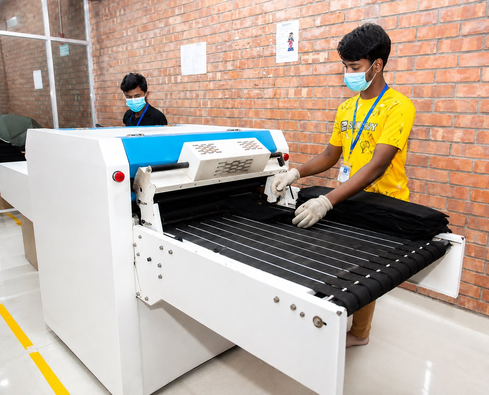
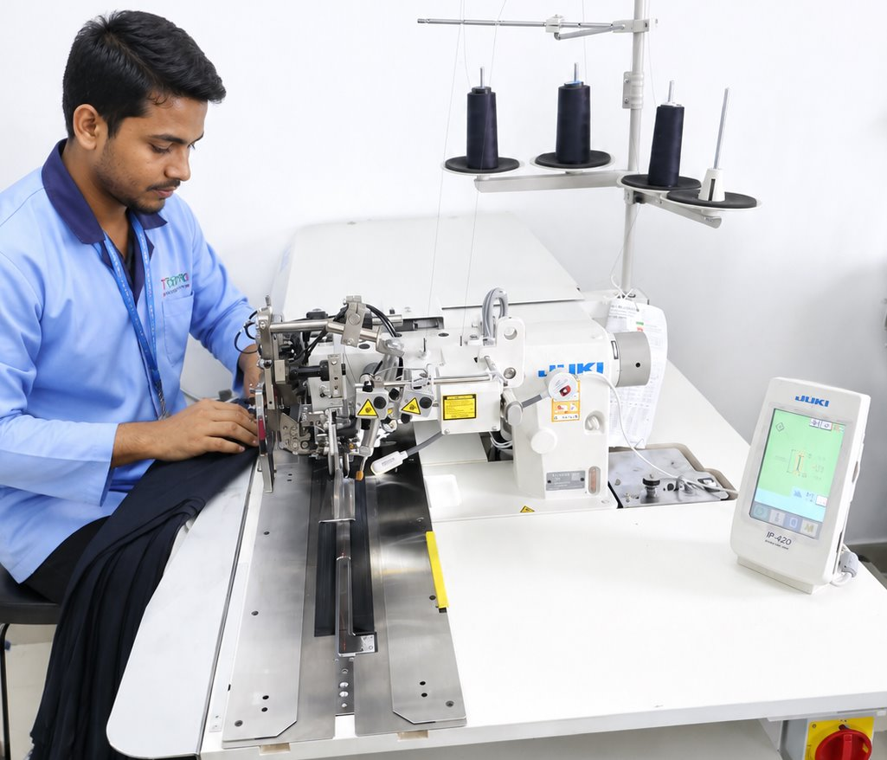
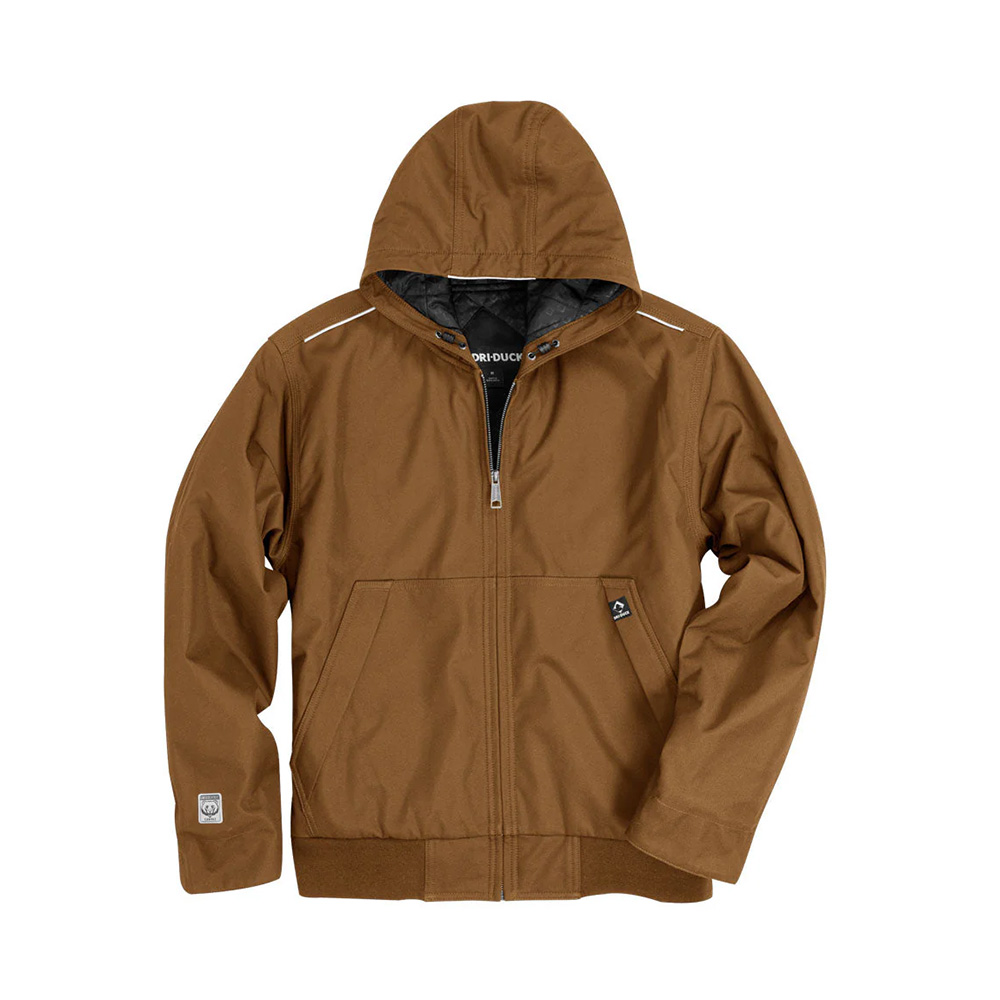
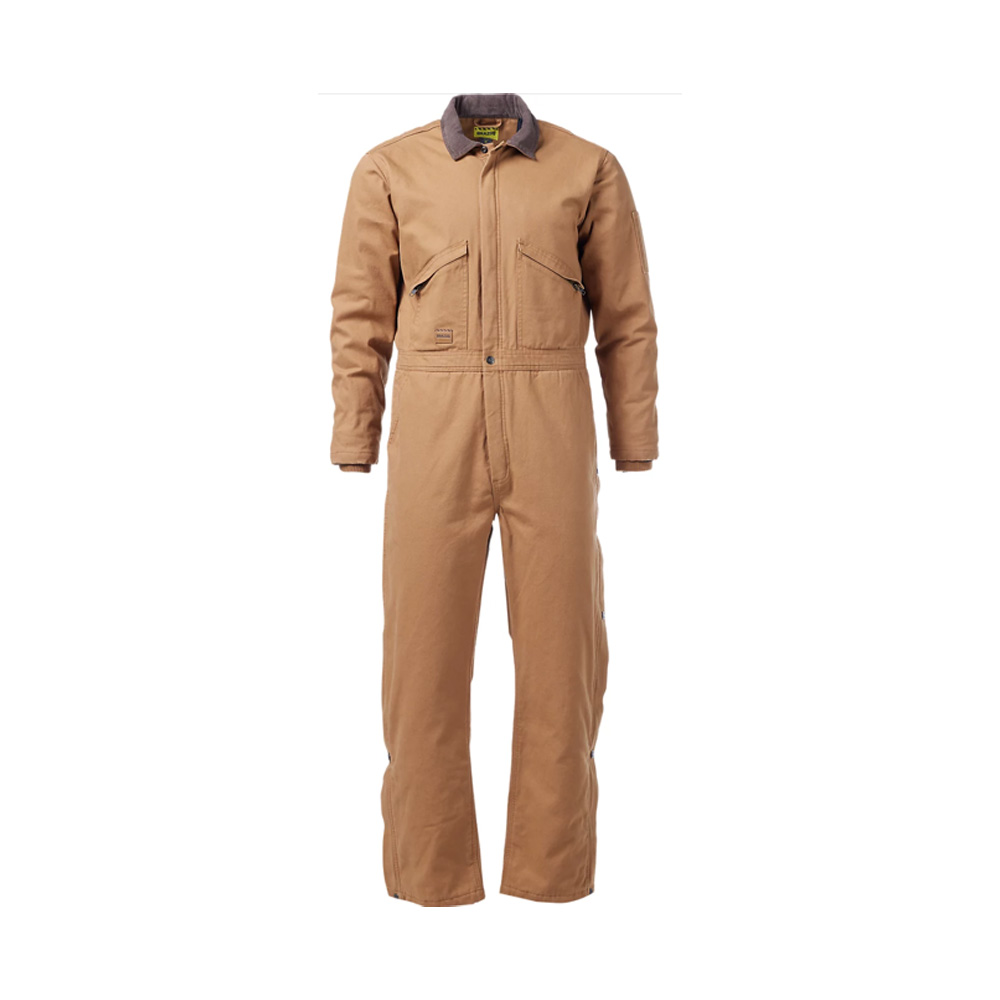
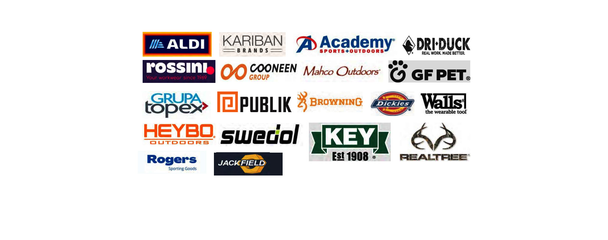

25+
Years Experience in Garment Manufacturing & Export

International apparel manufacturing and export
Texpro is a compliant apparel manufacturer specializing in high-visibility safety garments, flame-retardant (FR) workwear, rainwear, waterproof sealed jackets, outerwear, uniforms, faux down and insulated jackets for USA and European brands.
Texpro at a Glance
Evidence behind the data
The homepage now connects each major claim with factory photos, compliance proof, and documents that buyers can request before a quotation or bulk order discussion.

Supported by production-floor photos, factory profile data, line setup, sampling capability, and buyer-facing product presentation files.

Supported by real factory worker images, production process visuals, and facility information for sewing, cutting, finishing, sample, and warehouse areas.
Supported by certification display assets and certificate files that should be linked or shared with buyers during quotation and supplier review.
Company description
Texpro is a Bangladesh-based garment manufacturer specializing in Outerwear, Workwear, High-Visibility Safety Wear and Uniforms. We support USA and European buyers with OEM and private-label production, strong compliance, reliable quality control and timely shipment.
Product image preview
A quick visual sample of Texpro product capability, from waterproof jackets and hi-vis garments to coveralls, work pants and utility vests.

Waterproof, softshell and insulated workwear programs.

Reflective garments for industrial and utility buyers.

Industrial coveralls, FR options and uniform programs.

Cargo, utility and outdoor pants with custom trims.
Our Strengths
Certifications & Compliance
Texpro supports international buyers with recognized compliance, quality, and responsible manufacturing standards.
Clients & Partners
Texpro has experience supporting workwear, outdoor, safety wear, and apparel buyers across the USA, Canada, and Europe.

Operational scale